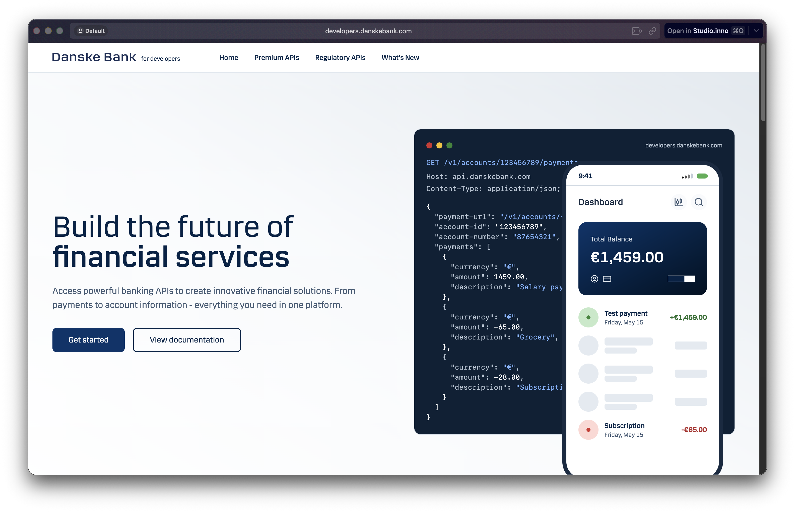
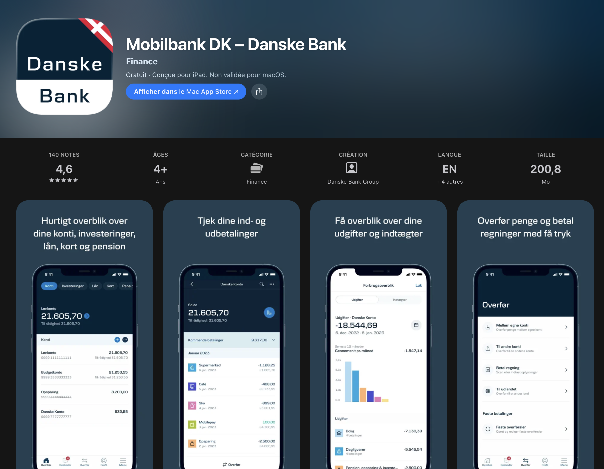
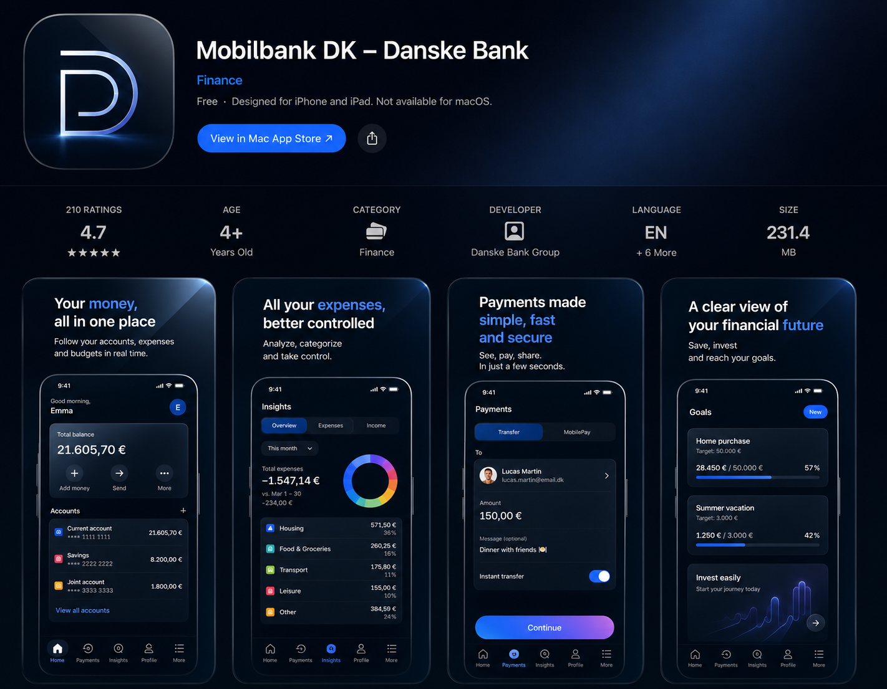

Hi.
Alexandre Cormeraie · 25.
Head of AI & Innovation, TGV Europe.
I work for a 190-year-old rail group you may have heard of.
Today I'm speaking for myself.
You don't deploy AI. You become it.
Those are not the same project.
Hi.
Alexandre Cormeraie · 25.
Head of AI & Innovation, TGV Europe.
I work for a 190-year-old rail group you may have heard of.
Today I'm speaking for myself.
The luck I had.
A manager who actually listened to the young ones.
That's it. That's the unlock.
→ Damien Wattez, 15 yrs my senior.
Two brains. One job.
3 years ago — a chance.
Now — digital innovation at TGV Europe.
And the youngest Digital Evangelist in the SNCF group.
And — I've always been critical about digital.
In big groups. In banks. Banks like yours — not specifically yours, of course.
Same one-liner every time : "You're not thinking from inside people's skin."
That's why for the last 3 years I've been testing this : a master thesis on "Gen Z in Tech — the urgency," and the very same questions I just asked you, put to 500+ executives.
Same gap. Every time.
One thing before we start.
Who in your ELT is under 25?
…and under 30?
Do you think you are digital natives?
Be honest. No one's looking.
Digital Native
/ˈdɪdʒɪtəl ˈneɪtɪv/ · noun
Someone whose cognition was built with digital tools during their formative years.
→ Gen Z (1997–2012). One foot in, one foot out. The last bridge.
Then why no one under 30 in your ELT?
You have digital products. Online services. AI everywhere on the Forward '28 roadmap.
Why aren't they in the room?
Two chapters. One ambition.
Digital-native first.
You came here for AI-native.
The four other rooms share their experience — what and how to deploy. I came to share what to become.
Be AI-native = you build AI products.
Be digital-native = you build digital experiences. AI lives inside them.
You're a bank. You're an experience.
Your 2035 North Star — re-framed.
Not "AI-native." Digital-native by 2035.
AI is the engine — it lives inside. The shape of your bank is what matters.
"Not 'we don't invest enough.' 'We don't invest in the right direction.'"
That's how you stop running projects, and start choosing them.
Your own framework — Responsive Leadership.
It only responds to what's already in the room.
So make sure the future is already in the room.
We did this shift — at TGV Europe.
3 years ago : a graveyard of decks. Today : an AI strategy built by a duo. Still the only ones in the group.
→ Full story in Chapter 2.
↑ 2 years ago we did defend → win. today : win + AI. you've already shown you can shift identities.
I've done my homework.
You're not behind. You've started.
→ Forward '28 strategy live.
→ DanskeGPT in production.
→ Copilot in retail = +14% time saved on notes.
→ AWS multi-year deal since 2024.
→ Dr Fiona Browne heading AI from Belfast.
→ Q4 2025 : record core banking income, +14% profit.
At Davos January, Carsten : "AI investments are long-term — build the basics first."
The rails are laid. The question is who steers them.
And honestly — you've already stepped aside. You've shipped things that were digital-native — for their time.


And honestly — you still know how to do it, a bit. Not just for kids — for the tech crowd too.

Per the research I did with ChatGPT, you're one of the most digitalized banks on the market. True. Real.
But that was then. The bar for 2026 has moved on a bit.
And that's the whole point — digital-native isn't a state.
It's a movement. It keeps evolving. The pace eased.
By 22, today's customer is online.
Revolut. Memo. N26. Bunq. Digital native. Soon AI native.
In 2035, your today's 22-year-old
is your main customer.
So — where will they bank ?

↓ evolve with the time ↓

→ Go where they consume. Don't force them to come to where you sit.
→ You're not an AI provider. You're a banking experience.
What AI is for. What you are for. The split, visualised.
What AI is for. What you are for.
AI : the forms. The repetitive. The compliance. The boring.
You : the experience. The story. The trust. The voice that doesn't sound like 1985.
Revolut already runs this way. Everyone ends up with the same AI — the difference is what you build it into.
So — what does the split look like ?
One app today. Two apps tomorrow. AI gets the boring. You get the experience.
AI's house. The forms. The boring. Plug-and-play.
Everyone ends up with the same one.
Your house. The experience. The story. Yours alone.
AI can't quite copy this.
Don't think "AI-native."
Think digital-native first.
AI goes inside.
Not a framework. A duo. Then everything followed.
Him
A senior — 15 yrs in the house.
Shipped every IS project in his career. Knew every gear.
The board told him : relaunch innovation.
He didn't go hunting for an AI expert. He went hunting for a great listener.
"Nothing was possible" — he knew exactly why.
Me
A junior — fresh in the house, mid on tech.
Junior in the company : didn't know the rouages.
Mid-junior on tech : enough experience from outside to ship.
From elsewhere. No nostalgia. No "this is how we do things".
"Everything was possible" — I didn't know yet why it shouldn't be.
Two visions. One room.
→ His gears + my fresh eyes. His "no" + my "why not". His memory + my naivety.
We thought. We structured. We shipped. Together.
A strategy built honest. Advanced fast.
He let me take the spotlight.
He could have wanted all the light. He didn't.
Our big boss got it : managerial quality = pushing young forward — not standing in front.
That was his greatest quality.
Two profiles. One native team.
→ One purely digital-native. Truly native.
→ One digital-native for your company. Native, relative to where you stand.
Both together = the native team. That's how it works. Pretty well.
Five reasons they leave. The flip is yours to write.
Flip the question — for yourselves first.
Each of you : think of the one person who decided you'd stay or go in your career. Was it HR ? No. It was someone you respected in the room.
Lawick question : who in this room made an Alex want to stay ?
Stop selling a 15-year career.
Offer a trajectory. A sprint with proof. A 3-year leap you can name.
Banking experience + financial education = a real mission. You already have the substance — say it.
I've seen this play out : "career path" loses the room ; "trajectory" earns attention.
5 reasons a 22-year-old leaves a 150-yr company.
→ No ownership. Decisions belong upstairs.
→ No velocity. 6 months to ship a debit card story.
→ No mission lived. Purpose lives in the keynote, not the corridor.
→ No permission. Every move needs three approvals.
→ No future in the room. Nobody at the table looks like 2035.
Now invert each line. That's the job.
Simplicity is the recruiter.
One click. Fast. Friction-free. Inside, outside.
If your internal tools take 4 days to provision, a 24-yo who opens an account in 90 seconds on a fintech reads the signal.
True story : 6 months waiting for a debit card from a 150-year-old bank. An uncomfortable signal. Talent reads it — often quietly.
The Alex test.
Photograph your ELT tomorrow. Show it to a 24-year-old engineer in Lyngby. Ask : "is this where you want to spend 5 years ?"
Their face tells you everything your engagement survey doesn't.
On-ramps — pure rec, in agility.
→ Hackathons. Build the profile in 48 hrs, not 6 rounds.
→ Tech events. The best profiles are already in a room — pick them there.
→ School projects. Reverse the funnel — give them a real problem before they're hired.
→ In-house labs. Make staying interesting before they ask why.
HR pipelines tend to miss Alex. Faster rooms find him first.
Senior carries the process. Junior keeps the focus.
My boss carries every complex process in his head — so I can stay on pure innovation.
We didn't change the company. We changed our direction.
First step. Small territory. Works.
About the shadow board…
Stop it. Useful for press releases. Less useful for juniors.
Assume the duo on the org chart.
Duo goes everywhere.
Project managers. Transformation leads. Two profiles, anywhere it matters.
Today I speak about digital-native duos. They knew the rest of the business better than me.
Maybe tomorrow — inter-generational duos on every other strategic stake too.
Every senior leader — name a pair.
Not just the C-suite. Every leader who steers a real strategic stake.
→ Public. Named on the org chart. Not "shadow", not "advisor".
→ Real. The young one gets to ship — and to dissent.
The pair is the unit. Not the senior, not the junior — the pair.
Indivisible duos on every transformation.
Two names at the top. Senior + digital native. Same accountability, same recognition.
Make this place a magnet.
Move quickly. Stay honest about the work. That's how the best profiles tend to stay long.
Tomorrow's market is more transparent. People read the signals — both ways.
Offer them enough. The exchange tends to come back.
I came to tell you who to put next to you.
Around you today : great rooms on what to deploy. The deeper choice — who decides — is the only one fully yours.
Move forward — by two.
Rework management itself to push the duo. Not a project. A reflex.
Every leader. Every transformation. Every hire.
Day 3 — seed planted.
Wednesday you'll debate : "Gen Z perspective on Danske as a workplace." You already know what I think.